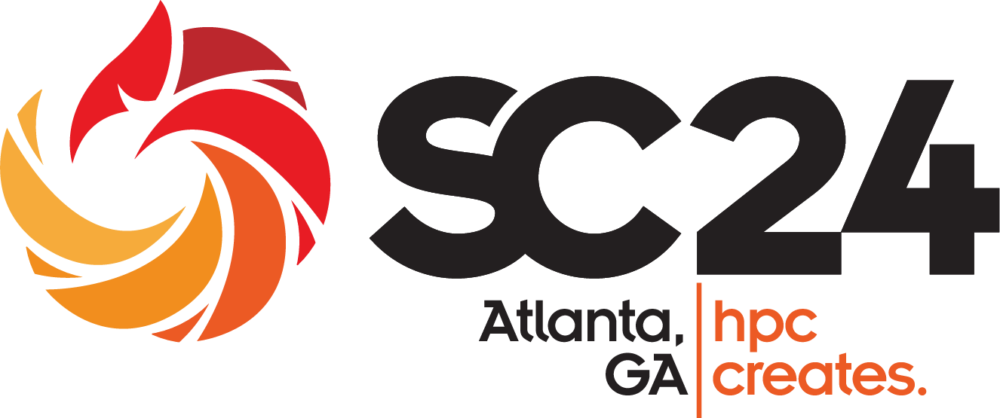

The 3nd International Workshop on Machine Learning Hardware is co-located with SC 2024. Please scroll below for an overview of the workshop’s scope. (Links to first edition, second edition).
TBD
The last decade has been marked by a race to model size in deep learning. Industrial labs (notably OpenAI) have been training larger and larger architectures on various kinds of tasks. This capital-intensive endeavor has been successful in producing models that contain compressed implementations of many fundamental language-based capabilities. We’ve started to refer to the largest models as “Foundation Models”, in the sense that they are a rich basis for many applications.
As a result, last year saw a surge of interest and use of Generative AI in the industrial sector. There is an explosion in the training and sophistication of closed- and open-source models, as well as in the number of providers of inference services for these.
The scientific community has a particular interest in the most sophisticated capabilities of FMs, as evidenced by the emergence of communities like the Trillion Parameter Consortium. However, the compute requirements both for training and inference of future trillion plus parameter models are extreme. Accordingly, there is growing interest from the community having its own custom hardware for both of these workload classes.
Previous iterations of the IWMLH workshop have focused on studying several AI accelerator approaches to the compute requirements of ML training and inference. Several labs have since been collaborating with AI accelerator companies. The last iteration of this workshop focused on the applications being developed on such experimental systems. In this iteration of the workshop, we will focus on the question of scale. The following aspects are of interest:
Charlie Catlett, Argonne National Laboratory - catlett@anl.gov
Swann Perarnau, Argonne National Laboratory - swann@anl.gov
Valentin Reis, Groq, Inc - vreis@groq.com
Takano Ryousei, AIST
Pete Beckman, ANL
Kentaro Sano, RIKEN
Prasanna Balaprakash, ORNL
Rosa M. Badia, BSC
Tony Hey, STFC UKRI
Haohuan Fu, Tsinghua University/NSCCWX